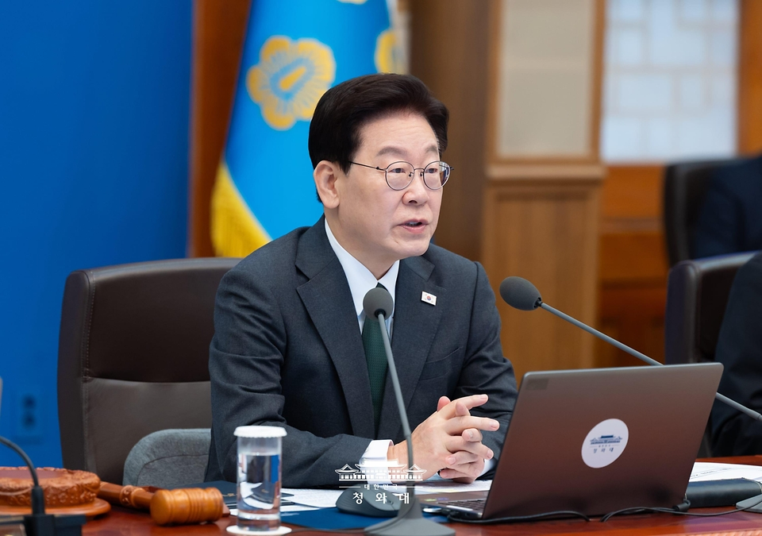

[정치밥상] 이재명 정부 사회정책 사실상 낙제, 종부세 후퇴 압박까지
4만달러 시대를 말하는 나라, 체감 못 하는 밥상
9억원 안 철회, 당은 14억원 통일 건의
AI경제저널=김갑봉 편집국장 | 코스피가 24일까지 세 거래일 동안 위아래로 크게 흔들렸다. 11월 20일 5.21% 내린 4869.96, 23일 3.31% 내린 4708.54로 마감했다. 24일에는 6.32% 올라 5006.03으로 5000선을 되찾았다.
20일에는 매도 사이드카가, 24일에는 매수 사이드카가 발동됐다. 증시가 하루에 5% 넘게 출렁이고 나라의 소득 숫자가 오르는 동안 일하는 사람들의 밥상은 어떤가. 이 글의 물음이다.

나라는 잘산다는 숫자
재정경제부는 10월 27일 3분기 속보치를 평가하며 올해 1인당 국민총소득이 4만달러대에 들어서는 것이 확실시된다고 밝혔다.
1~9월 평균 환율 달러당 1463원이 연말까지 이어진다고 가정했다. 경상 국내총생산이 국제통화기금 전망대로 21.7% 늘면 1인당 국민총소득이 4만3500달러에 이른다는 추산이다. 한국은행이 6월 발표한 지난해 1인당 국민총소득은 3만6963달러였다.
한국은행 속보치로 3분기 실질 국내총생산은 전 분기보다 1.0%, 전년 동기보다 3.4% 늘었다. 국제통화기금은 한국의 올해 1인당 국내총생산을 4만3512달러로 내다봤다.
체감하지 못하는 밥상
같은 3분기에 민간소비는 전 분기보다 0.2% 줄었다. 정부는 주식거래대금 감소와 자동차 업계 파업 같은 특이 요인이라며 4분기 반등을 전망했다.
한국신용데이터 3분기 보고서에서 소상공인 사업장당 매출은 전년 같은 분기보다 4.36%, 이익은 8.30% 줄었다. 전년 3분기 소비쿠폰이 남긴 기저효과가 일부 작용했다는 분석도 있다.
국가데이터처가 11월 11일 낸 10월 고용동향에서 15~29세 청년 고용률은 42.9%였다. 1년 전보다 1.7%포인트 내렸다.
김미루 한국개발연구원 거시·금융정책연구부장은 18일 경제전망 브리핑에서 성장률 반등을 짚었다. 그러면서도 실질임금이 하락한 산업에 종사하는 노동자 비중이 50% 내외라고 설명했다.
한국갤럽이 11월 17~19일 조사한 이재명 대통령 직무 긍정 평가는 40%, 부정 평가는 49%였다. 표본은 1001명, 표본오차는 95% 신뢰수준에서 ±3.1%포인트다.
긍정 평가자의 24%는 외교를, 7%는 서민 정책·복지를 이유로 꼽았다. 부정 이유 1위는 경제·민생 18%였다. 부정 이유 1위가 넉 달 만에 부동산에서 경제·민생으로 바뀌었다.
성적표의 앞면과 뒷면
앞면이 없지 않다. 2027년도 보건복지부 예산안은 올해보다 8.2% 늘어난 148조7697억원이다. 미래대응기금을 더하면 152조4328억원으로 10.9% 많다.
참여연대 토론회 자료에서 기초생활보장 예산은 19.9%, 의료급여는 25.0%, 주거급여는 18.6% 늘었다. 소득지원은 분명히 커졌다.
고용노동부 집계로 올해 1분기 재해조사 대상 사고사망자는 잠정 113명으로 전년 동기보다 17.5% 줄었다.
뒷면도 있다. 10월 7일 한국노동사회연구소 노동포럼에서는 노동 관련 국정과제를 따진 발표가 나왔다. 세부 항목 42개 가운데 31개, 73.8%가 미실현이라는 내용이었다. 실현은 7개, 부분 실현은 4개다. 기준일은 9월 21일이다.
이명규 한국노동사회연구소장은 정부와 여당이 세 가지 방식으로 국정과제를 하향 조정했다고 말했다. 약속 수준을 낮추고, 결정 시점을 미루고, 반대 방향 논의를 여는 방식이다.
이주하 참여연대 사회복지위원장은 10월 29일 토론회에서 2027년 국세수입이 49.8% 늘 것으로 전망된다고 짚었다. 그런데도 복지부 예산 증가율 8.2%는 총지출 증가율 12.8%에 못 미친다는 지적이다. 소득지원은 늘었지만 돌봄 인력과 공공의료 투자는 부족하다는 발제였다.
한국정책학회 평가단은 8월 12일 사회복지 분야에 100점 환산 61.2점을 줬다. 분야마다 평가 항목 가운데 이행충실성은 높았고 국민체감도는 가장 낮았다. 교수 30명이 매긴 점수이며 국민 조사가 아니다.
이 글의 잣대는 점수표가 아니라 식탁이다. 소득지원은 늘었지만 노동 국정과제 세부 항목은 대부분 멈춰 있고, 청년 고용률과 소상공인 이익은 뒷걸음쳤다. 식탁의 체감으로 재면 이 글은 사회정책을 사실상 낙제라고 본다.
공제선을 둘러싼 당정의 엇갈림
체감도가 낮은 가운데 종부세 공제선을 둘러싼 싸움이 벌어졌다.
재정경제부는 8월 3일 세제발전심의위원회에서 1세대 1주택 종부세 기본공제를 바꾸겠다고 밝혔다. 실거주는 공시가격 12억원에서 14억원으로 올리고, 비거주는 9억원으로 낮추는 안이었다. 실거주 1주택자는 시가 약 20억원까지 종부세를 내지 않게 하는 안이다.
정부는 9월 1일 국무회의에서 세제 개편 정부안을 확정하며 비거주 공제를 현행 12억원으로 유지했다. 9억원 안을 거둬들인 것이다. 실거주와 비거주의 격차는 5억원에서 2억원으로 줄었다.
11월 8일 고위 당정협의회 뒤 박성준 더불어민주당 수석대변인은 실거주와 비거주 모두 14억원으로 통일해 달라고 정부에 건의했다고 밝혔다. 한정애 사무총장의 건의이자 서울 지역 의원들 논의에서 나온 얘기라며, 재산세와 종부세가 2028년 총선과 직결된다고 설명했다.
청와대는 9월 확정한 정부안을 유지하겠다며 거주와 비거주를 가르는 원칙을 지키겠다는 입장을 밝혔다.
정청래 전 대표는 11일 페이스북에서 이재명 정부의 실거주 우대정책은 지켜져야 한다고 썼다. 김민석 대표는 12일 당 공식 유튜브 방송에서 "당의 어떤 공식적인 건의처럼 약간 오인되고 오해된 바가 있다"고 말했다.
종부세법 개정안은 예산부수법안으로 국회 재정경제기획위원회 조세소위원회에서 심사 중이다. 30일까지 상임위를 넘지 못하면 정부 원안대로 12월 1일 본회의에 자동 부의된다.
일하는 사람들의 몫으로 보면 무게가 한쪽으로 쏠린다. 9월 21일 기준으로 노동 국정과제 세부 항목 31개가 미실현으로 집계됐다. 그 7주 뒤 여당 수석대변인은 비거주 1주택자의 공제선까지 14억원으로 맞추자고 건의했다.
두 사안은 별개이고, 김민석 대표는 그 건의에 선을 그었다. 그래도 비거주 1주택자의 공제선은 고위 당정협의회 뒤 여당 브리핑에 올랐다. 일하는 사람들의 멈춘 약속도 그만큼 무게 있게 다뤄지는지 물어야 한다.
실질임금이 내려간 산업에 종사하는 노동자가 절반 안팎이라면 4만달러는 평균의 숫자일 뿐이다. 밥상이 달라졌는지는 평균이 아니라 식탁에서 물어야 한다.
참고문헌
- 재정경제부, "2026년 세제개편안 발표", 2026.8.3, https://www.korea.kr/briefing/pressReleaseView.do?newsId=156773219
- 재정경제부, "2026년 세제개편안 정부안 확정", 2026.9.1, https://www.korea.kr/briefing/pressReleaseView.do?newsId=156776418
- 재정경제부, "2026년 세제개편안", (접속 2026.11.25), https://www.mofe.go.kr/2026/taxlaw.do
- 정책브리핑, "거주용 1주택, 시가 20억 원까지 종부세 과세 대상서 제외", 2026.8.3, https://www.korea.kr/news/policyNewsView.do?newsId=148969278
- 정책브리핑, "3분기 경제성장률 1.0%…올해 3% 중반 성장 가능성 높아져", 2026.10.27, https://www.korea.kr/news/policyNewsView.do?newsId=148974354
- 정책브리핑, "복지부 내년 예산 149조 원…생계급여 올리고 지역·필수의료 강화", 2026.9.4, https://www.korea.kr/news/policyNewsView.do?newsId=148971270
- 국가데이터처, "2026년 10월 고용동향", 2026.11.11, https://www.korea.kr/briefing/policyBriefingView.do?newsId=156788701
- 한국개발연구원, "KDI 경제전망(2026. 하반기)" 브리핑, 2026.11.18, https://www.korea.kr/briefing/policyBriefingView.do?newsId=156789757
- 한국은행, "2024년 국민계정(확정) 및 2025년 국민계정(잠정)", 2026.6.9, https://www.bok.or.kr/portal/bbs/B0000501/view.do?nttId=10098382&menuNo=201264
- 고용노동부, 2026년 1분기 재해조사 대상 사고사망자 잠정 집계, 2026.4.14, https://www.moel.go.kr/news/enews/report/enewsView.do?news_seq=19239
- 한국갤럽, "Daily Opinion 제683호(2026년 11월 3주)", 2026.11.20, https://www.gallup.co.kr/gallupdb/reportContent.asp?seqNo=1668
- 참여연대, "2027년도 보건복지 예산안 분석 토론회" 자료, 2026.10.29, https://www.peoplepower21.org/welfare/2054851
- 이명규, 「이재명 정부 시기 입법안 평가와 향후 노동정책 이슈 전망」, 한국노동사회연구소 노동포럼, 2026.10.7 (매일노동뉴스 2026.10.8, https://www.labortoday.co.kr/news/articleView.html?idxno=237124 경유)
- 한국정책학회, 2026 하계학술대회 「이재명 정부 1년 공약이행관련 국정과제평가 대토론회」, 2026.8.12 (서울신문 2026.8.12, https://www.seoul.co.kr/news/society/2026/08/12/20260812500228 경유)
[사진 출처]
- [사진1] 청와대 제공, 정책브리핑 「2026년도 제50회 국무회의」, 2026.11.24, https://www.korea.kr/multi/policyPhotoView.do?bbsKey=74495
관련기사
- [경세사초] 외환위기 29년, 일하는 사람들이 먼저 치른 위기의 비용
- [경세제민의 눈] 진보·보수와 좌우·극우·수구를 가르는 바른 잣대
- [경세제민의 길] 백령공항, 재생에너지로 짓고 황해 하늘길로 키우자
- [경제밥상] 배당 48조원 시대의 밥상, 상위 1%에 몰린 숟가락
저작권자 © AI경제저널 무단전재 및 재배포, AI학습 및 활용 금지